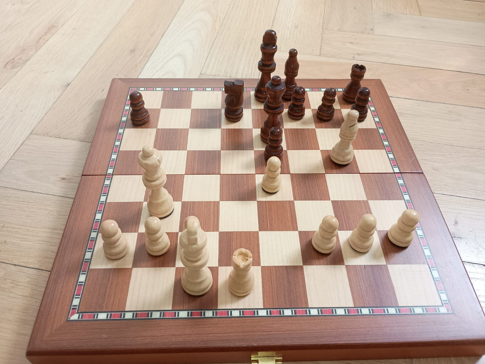

Willkommen bei ChessMaster 960
Dein Maximum im Schach erreichen
Schach ist schon seit ich ein Kind war ein großes Hobby von mir. Leider hat mir immer eine Website gefehlt, die mir dabei hilft ohne viel Aufwand, meine Fähigkeiten laufend zu verbessern. Deshalb wurde ChessMaster 960 erstellt.
Angebot
- Unbegrenzte Schachpuzzles
- Eröffnungsdatenbank
- Spielanalysen mit dem Computer
Alles um nur €10 / Monat.
Berühmte Spiele:

Transkription
Spielverlauf: Byrne vs Fischer (Game of the Century)
1. Nf3 Nf6 2. c4 g6 3. Nc3 Bg7 4. d4 O-O 5. Bf4 d5 6. Qb3 dxc4 7. Qxc4 c6 8. e4 Nbd7 9. Rd1 Nb6 10. Qc5 Bg4 11. Bg5 Na4 12. Qa3 Nxc3 13. bxc3 Nxe4 14. Bxe7 Qb6 15. Bc4 Nxc3 16. Bc5 Rfe8+ 17. Kf1 Be6 18. Bxb6 Bxc4+ 19. Kg1 Ne2+ 20. Kf1 Nxd4+ 21. Kg1 Ne2+ 22. Kf1 Nc3+ 23. Kg1 axb6 24. Qb4 Ra4 25. Qxb6 Nxd1 26. h3 Rxa2 27. Kh2 Nxf2 28. Re1 Rxe1 29. Qd8+ Bf8 30. Nxe1 Bd5 31. Nf3 Ne4 32. Qb8 b5 33. h4 h5 34. Ne5 Kg7 35. Kg1 Bc5+ 36. Kf1 Ng3+ 37. Ke1 Bb4+ 38. Kd1 Bb3+ 39. Kc1 Ne2+ 40. Kb1 Nc3+ 41. Kc1 Rc2#
„I don't believe in psychology. I believe in good moves."
— Bobby Fischer